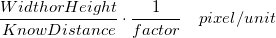

一度スケールを設定すると、画像に保存され、後で他のツールやアプリで使用できるようになります。
この機能は、画像のピクセルを実際のサイズ（10ピクセル/nmのスケールなど）にマッピングするために使用されます。
スケールを持つ顕微鏡画像でよく使用されます。
| 既知の距離 | ROIボックスのサイズを変更し、ROIの実際の距離を表す幅/高さの値を入力します。距離がROIの幅を参照するか高さを参照するかは、選択した幅\高さラジオボタンによって決まります。 |
|---|---|
| 長さの単位 | 実際の距離の単位を入力します。 |
| ピクセル単位の幅/高さ | 距離がROIの幅または高さのどちらを参照しているかを決定します。 |
| 倍率 | スケールの倍率を入力できます。実際のスケールは以下のようになります
 |
一度スケールを設定すると、画像に保存され、後で他のツールやアプリで使用できるようになります。 |
この機能は、画像を背景としてグラフウィンドウに挿入するときに、画像の位置とサイズを決定するために使用されます。
地図をレイヤの背景としてグラフに挿入する場合に特に便利です。こちらの簡単な例を参照してください。
Note:
|
補間によって画像のサイズを変更します。
| 最近傍 | 最近傍補間法を使用して画像のサイズを変更します。 |
|---|---|
| Bilinear(共一次補間) | Bilinear補間法と平均化を使用して、高品質の画像を生成します。通常、画像を拡大するために使用されます。 |
| Bicubic | Bicubic補間法と平均化を使用して、高品質の画像を生成します。Bilinearよりも低速ですが、高品質を提供します。通常、画像を拡大するために使用されます。 |
| ピクセルの面積の対応 | ピクセルの面積の対応を使用して、画像のサイズを変更します。通常、画像を縮小するために使用されます。 |
| Lanczos | Lanczos補間法を使用して画像のサイズを変更します。サイズ変更された画像が範囲外の値である可能性があります。 |
実際のサイズの表示やズームなど、イメージウィンドウの表示サイズを変更するためのボタンとメニューが用意されています。
Note：これらのツールは、画像の実際のスケールやサイズを変更しません。
実際のサイズモード（1：1ピクセル）とウィンドウに合わせるモードを切り替える
デフォルトでは、画像の幅/高さが800未満の場合、画像は実際のサイズモードで開かれます。@IWPでデフォルトのしきい値を変更できます。 |
ズームとパンニング
最大ズームインレベルは3200％です。ズームインすると画像がピクセル化されます。 |